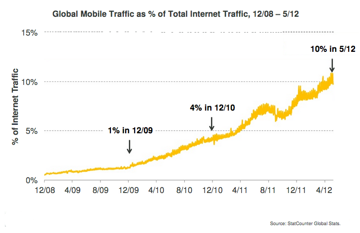
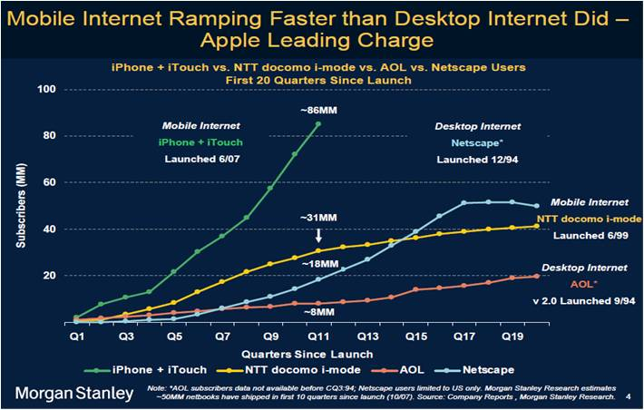
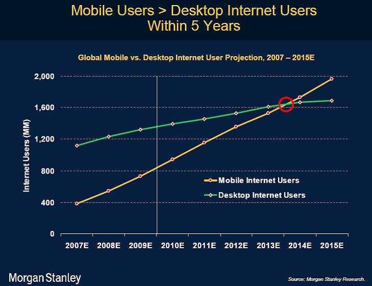
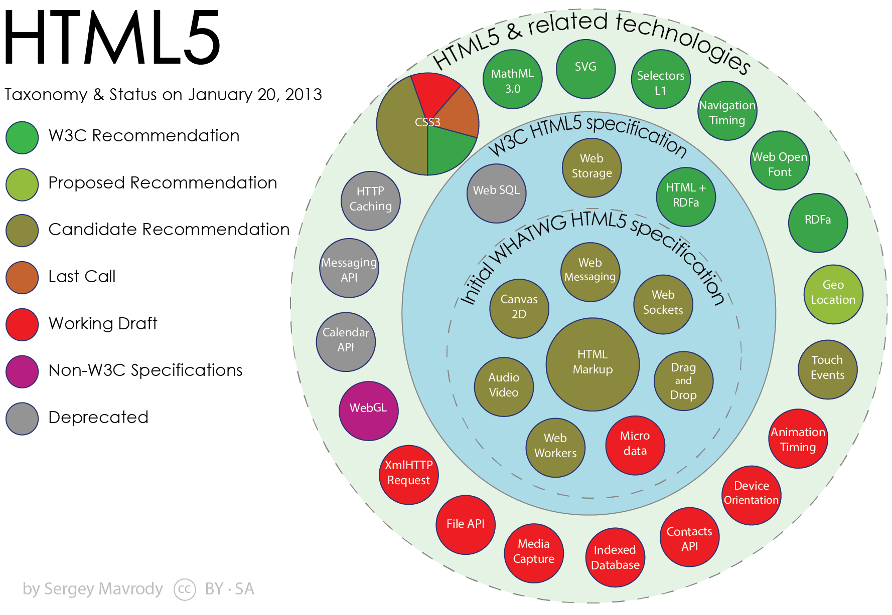
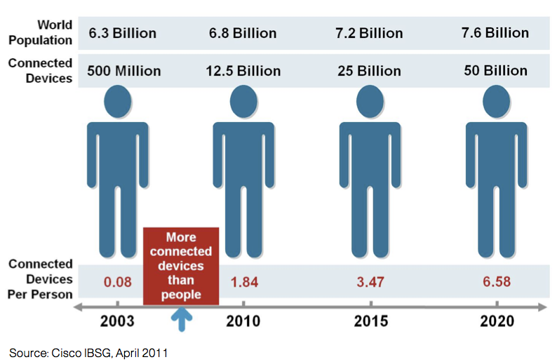

The Web
Today and the Future
by Eric Bollens
A Bit About Me
What I Do
Web Architect
UCLA Office of Information Technology
Project Lead
WebBlocks Responsive Toolkit
Protocol Engineer
Community App Sharing Architecture
Organizer
Mobility & Modern Web Conference
Consultant
Bollens Information Technology Services
What I Enjoy
A little bit of a lot of things...
The Web Platform
Framework and API design
Standards, semantics and languages
Networks and routing
Automation
Also...
Investing and entrepreneurship
Backpacking, trail-running and the outdoors
But Enough About Me...
Let's Talk Web
In the Beginning
Imagine a console in your office... combining the features of a Touch-Tone telephone, a television set, a Xerox machine, and a small electronic computer.
Turned into a system of synchronous satellites, this console will bring the accumulated knowledge of the world to your fingertips.
Arthur C. Clark, Popular Science, May 1970

Tim Berners-Lee, Information Management: A Proposal, CERN, March 1989
WorldWideWeb: Proposal for a HyperTexts Project
Tim Berners-Lee and Robert Cilliau, November 1990
Marriage of hypertext and the Internet
UDI - Universal Document Identifier
HTML - HyperText Markup Language
HTTP - Hypertext Transfer Protocol
By Christmas, the first implementation was done
Growing the Web
Mosaic Web Browser
First notable graphical web browser
Media becomes a first-class citizen of the web
World Wide Web Consortium (W3C)
Standards based on royalty-free technology
so they could be adopted by anyone
The Web is Not Optional
By the late 1990's, almost every company had a website
Free publishing and marketing medium
The Dot-Com Era
Driven by low interest rates and new technology
Ideas bought for novelty, not business models
Boom turns to bust
but not all is lost
Web 2.0
Borne from dot-com successes
Amazon, eBay, Paypal, Google, Wikipedia, etc.
New era of the web
Rich Internet Applications
Web-oriented Architecture
Social Web
From information to interaction
Ubiquitous Web
Wikis for information
Social Networks for communication
Blogs and Podcasts for publishing
Online Stores for commerce
Streaming Services for media
Anywhere and everywhere
at home... in the office... throughout the world
Rise of the Mobile Web
PocketWeb for Apple Newton
Nokia 9000 Communicator on Sonera & Radiolinja
WML, WAP and XHTML Mobile Profile
Touch screens and full-featured web browsers



Mobile Pervasiveness
Mobile is now a necessity
Native Apps
iOS, Android, Blackberry, Windows Phone, etc.
Mobile Web Apps
jQuery Mobile, Sencha Touch, MWF, etc.
Hybrid Apps
PhoneGap, Titanium Appcelerator, etc.
Responsive Web Design
Twitter Bootstrap, Foundation, WebBlocks, etc.
Abolish the Device Barrier
Responsive is a start
but there's still a lot of work to be done
New wave of technologies on the horizon
Web Platform is Everywhere
Browsers are getting better
Internet penetration
80% in the United States
70% among next 5 highest GDP countries
Mobile, tablet, desktop and more
5.7 Internet-connected devices per household (U.S.)
8.7 billion Internet-connected objects (Worldwide)
Breaking out of the browser
Offline, hybrid and elsewhere
Getting to HTML 5
The Making of a Standard
Almost 25 years and 5 editions old
and yet stuff from 1990 still works
even though no browser from 1990 still exists
Formed by discussion and debate
Browser makers
Authors
Standards folks
Others
Not always smooth going
The Release of HTML 4
W3C shipped HTML 4.0 in Dec 1997
Announces "fresh start"
based on XML tag sets
A Fumble with XHTML 1.0
XHTML Extended Forms in August 1999
Goals for the next generation…
are incompatible with preserving
backwards compatibility
Appendix C "loophole"
Use something that looks kind of like XHTML syntax,
but keep serving... text/html MIMEtype
And that's what everyone did
The Failing of XHTML 1.1
W3C publishes XHTML 1.1 in May 2001
Closes Appendix C loophole
Rough migration path
Draconian error handling
Never gains wide-spread use
A Fissure in the Community
Mozilla and Opera present a competing vision:
- Backwards compatibility with clear migration path
- Well-defined error handling
- User should not be exposed to authoring mistakes
- Practical use
- Scripting is here to stay
- Device-specific profiling should be avoided
- Open processes
W3C refused to devote resources
Web Hypertext Application Technology WG was born
WHATWG Forges Ahead
Won't break backwards compatibility
Doesn't scrap the past
"Retrospec" what's already there
Designs forgiving error handling
based on what's already there
Early products include
Web Forms 2.0
Canvas
Audio and Video
Shipped Code Wins
XHTML wasn't picking up steam
Browser makers packaging WHATWG specs
In October 2006, W3C announces:
Collaboration with WHATWG
Renaming Web Applications 1.0 to HTML 5
XHTML 2 officially abandoned in 2009
Today
WHATWG maintains "HTML Living Standard"
W3C defines snapshots such as HTML 5.0 and 5.1
Relationship is still evolving
The Web of Today

Elements of HTML 5
CSS 3
Tackled as modules
Formal Recommendations
Media Queries, CSS Namespaces Module, Selectors Level 3, Color Module Level 3, etc.
Candidate Recommendations
Backgrounds and Borders Module Level 3, CSS Text Decoration Module Level 3, CSS Fonts Module Level 3, CSS Values and Units Module Level 3, CSS Conditional Rules Module Level 3, CSS Flexible Box Layout Module, CSS Multi-column Layout Module, etc.
Drafts
CSS Grid Layout Module Level 1, CSS Template Layout Module, CSS Regions Module Level 1, CSS Shapes Module Level 1, CSS Masking Module Level 1, Compositing and Blending Level 1, CSS Custom Properties for Cascading Variables Level 1, etc.
Media
SVG
Adaptive Images
WebGL
Interoperability
WAI-ARIA
Microdata
RDFa
Persistence
Appcache
Web Storage
IndexedDB
Performance
Threading
Canvas proxy
Web Workers
Hardware-accelerated Effects
CSS Transitions and Animations
Web Animations 1.0
WebGL
Telemtry Exposure
CSS Media Queries and Conditional Rules
Battery Status, Timing and Visibility APIs
Device Access
Numerous APIs in the works
|
Touch Events
DeviceOrientatio Events Proximity Events Ambient Light Events Ambient Humidity Events onLine DOM State Web NFC Web Notifications |
Battery Status API
Push API File API Contacts Manager API Calendar API Geolocation API Media Capture API Web Cryptography API |
And many more...
When is HTML 5 Official?
W3C spec development is laborious
Repetitious last call / formal objection cycle
But the process is changing
Modification of objection process
Modularizing with Extension Specifications
Splitting work into incremental versions
HTML 5.0 Formal Recommendation by end of 2014
but you can use most of it today
What about HTML 5.1?
Getting HTML 5 out the door meant dropping things
Picks up where HTML 5 left off
All features of the HTML 5 Candidate Recommendation
plus unstable features that were excluded
HTML 5.1 Formal Recommendation by end of 2016
Today's Challenges
Not Everyone's Convinced
Kiran Prasad, Senior Director for Mobile Engineering:
more people are spending more time in the app,
and the app is running out of memory
trying to get... [animation] smoothness...
felt like we needed native to really do that well
There are a few things that are critically missing...
tooling support ... debugger that works ... performance tools
Mark Zuckerberg, Chief Executive Officer:
The biggest mistake we made as a company
was betting too much on HTML5 rather than native
It's so clearly the wrong strategy for us...
sounds juicy... [but] it doesn't move the needle for us
What Went Wrong?
Javascript
Interpreted language
Abstraction from underlying hardware at cost of performance
Rough around the edges
Animations
Graphics
Interaction
Network
Underlying protocols from an older era
Didn't envision the use cases of today
Offline capability
"Appcache is a Douchebag" ~ Jake Archibald, Google
User expectations haven't caught up
Local Persistence
WebSQL was abandoned
IndexedDB is a paradigm shift
Web Storage keeps changing
Device Features
Not all browsers expose native features
Not all devices have native features
Feature-by-feature planning is hard
And numerous other gripes...
Still, there's hope!
Jo Rabin, W3C Mobile Web Platform Community Group:
As web capabilities and the coherence of web standards improve, there will be no reason to write… applications using anything other than web technologies
To my mind it’s a question of manifest destiny
Pushing the Envelope
Javascript... where we shouldn't
Styling
calc(), toggle() and attr()
CSS Values and Units Module Level 3
Ascending Selector
CSS Selectors Module Level 4
Variables and Conditionals
CSS Conditional Rules Module Level 3 and CSS Custom Properties for Cascading Variables Level 1
Animation
Transitions, Transforms and Keyframes
Web Animations and Timing APIs
Javascript... where it struggles
Dymanic DOM
<template>, <decorator>, <content>, <element>
Web Components (HTML.next)
Low-level operations
Web Cryptography API
WebGL & WebCL
Asm.js

Getting Killed by the Network
TCP
Full RTT before data can be sent
Latency-limited by slow start
HTTP
Underutilization of segment
Browsers
Limit simultaneous connections to host
Even Worse on Mobile
Extra factors for mobile
Radio negotiations and state transitions
Core network latency
Inefficiency of periodic transfers
Polling
Beacons
Keep-Alive
Battery versus latency tradeoff
0.2% of bytes accounted for 46% of battery consumption
http://www2.research.att.com/~fengqian/paper/aro_mobisys11.pdf
Clippers and a Chainsaw
XMLHTTPRequest (XHR)
The X in AJAX
Runs over HTTP
WebSocket
Full-duplex TCP (not over HTTP)
Flexible but raw
No state management, compression or caching
Filling in the Gap
XHR and WebSocket are opposite ends of the spectrum
Tooling to fill in the gap
Generalized channels
Socket.io, SockJS Stack, ...
Data synchronization
MeteorJS, Firebase, ...
Publisher-subscriber model
Pusher, Tambur.io, ...
Server-Sent Events (SSE)
W3C Push API based off of SSE
Going to the Extreme
Web Real-Time Communication (WebRTC)
Peer-to-peer channels for audio, video and data
Media via Secure Real-time Transfer Protocol (SRTP)
Data via Stream Control Transmission Protocol (SCTP)
Fixing HTTP
HTTP 2.0
Streams, Messages and Frames
Multiplexing
Prioritization
One Connection Per Origin
Server Push
Header Tables
Adaptive Media
Browser-side
<picture>, <img srcset="...">
Server-side
MPEG-DASH, HTTP Live Streaming, etc.
HTTP Client Hints
Adaptive Everything
Network Information API
Bandwidth
Metered
Navigation & Resource Timing APIs
| redirect | fetch (Appcache) |
| domainLookup (DNS) | connect (TCP) |
| request (HTTP) | response (HTTP) |
| dom | load |
Embrace the RUM!
(Real-time User Measurements)
Looking to the Future
Some Players to Watch
HTML.next
Web Components, Web Intents
IndieUI
Device Interaction vs. User Intent
CSS 4
Ascending Selector, Pseudoselectors, Device Adaptation, etc.
HTTP 2.0
Streams, Frames, Multiplexing, Prioritization, Server Push
Open Standards
If you're interested, get involved
A Bit Further Out...
Web 3.0
The intelligent Web
- such as… semantic web, miroformats, natural language search, data-mining, machine learning, recommendation agents and artificial intelligence technologies -
[will] emphasize machine-facilitated understanding
John Markoff, New York Times, 2006
Ubiquitous Connectivity
The Internet of Things

http://www.cisco.com/web/about/ac79/docs/innov/IoT_IBSG_0411FINAL.pdf
Guessing the Future is Risky
There is no reason for any individual
to have a computer in his home.
Ken Olsen, founder of DEC (1977)
I see little commercial potential for the internet
for the next 10 years.
Bill Gates, founder of Microsoft (1994)
The internet will soon go spectacularly supernova
and in 1996 catastrophically collapse
Robert Metcalfe, inventor of Ethernet (1995)
No chance that the iPhone [will] get any significant market share.
Steve Ballmer,CEO of Microsoft (2007)
Still, the Future Looks Bright
Service accessibility
Semantic web technologies
Distributed computing and databases
Open identity, reputations and data
Ubiquitous connectivity
Intelligent applications